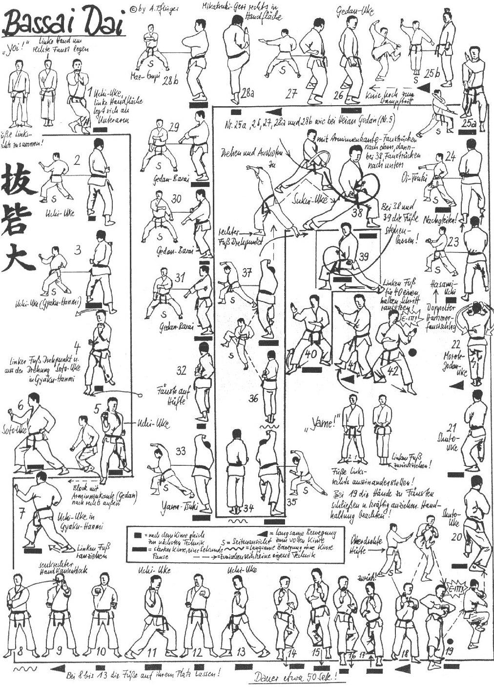

Bassai Dai

- Yoi andando in Eisoku Dachi braccia stese verso il basso, il palmo sinistro contiene il pugno destro e il pollice sinistro copre il cavo della destra.
- Carico all'orecchio sinistro e dopo aver eseguito Hittsui Geri destro attacco in Morote Uke destro in Kosa Dachi.
- Sposto indietro la gamba sinistra ruoto di 180° in Zenkutsu Dachi ed eseguo Uchi Uke sinistro anca aperta.
- Chiudendo le anche eseguo Uchi Uke destro.
- Mawatte ed eseguo Soto Uke sinistro anche chiuse.
- Apro le anche ed eseguo Uchi Uke destro.
- Faccio perno sugli avampiedi ruotando di 90° verso destra e mi abbasso piegando le ginocchia caricando prima ed eseguendo poi avanzando in Zenkutsu Dachi destro Soto Uke destro.
- Apro le anche ed eseguo Uchi Uke sinistro.
- Richiamo la gamba sinistra in Hachiji Dachi e porto i pugni uniti al fianco destro con il sinistro verticale.
- Eseguo Tate Shuto sinistro.
- Oi Tzuki destro, ruoto le anche ed eseguo Uchi Uke destro.
- Recupero la posizione di Hachiji Dachi.
- Oi Tzuki sinistro, ruoto le anche ed eseguo Uchi Uke sinistro.
- Ruoto le anche ed avanzando in Migi Kokutzu Dachi eseguo Shuto Uke.
- Avanzo ancora due volte con Shuto Uke in Kokutzu Dachi.
- Ruoto le anche andando in Zenkutsu Dachi e vado in presa verso l'alto con il braccio destro e la mano sinistra appoggiata sul polso come rinforzo.
- Carico ed eseguo Yoko Geri Gedan tirando i pugni al fianco destro. Kiai.
- Senza appoggiare il piede destro lo richiamo al ginocchio sinistro ed eseguo Mawatte mentre scendo lo allargo in Kokutzu Dachi ed eseguo Shuto Uke sinistro.
- Avanzo Shuto Uke destro.
- Richiamo la gamba destra in Eisoku Dachi e richiamando entrambe le mani al plesso solare chiuse, striscio lungo il tronco ed eseguo lentamente doppio Age Uke.
- Allargo leggermente i pugni ed eseguo Migi Hittsui Geri.
- Scendendo in Migi Zenkutsu Dachi allargo le braccia e richiamandole colpisco in doppio Oi Tzuki con i dorsi verso il basso e i gomiti a contatto con i fianchi.
- Migi Tsuri Ashi e chiudo la sequenza con Oi Tzuki destro.
- Eseguo (in sequenza come nell’Heian Godan) Mikazuki destro in Mawatte, Soto Uke destro Gedan Barai destro,
- Haishu Te sinistro, Mikazuki Uchi destro scendendo in Kiba Dachi, Mawashi Empi Uchi destro.
- Tengo la posizione e senza staccare la mano sinistra eseguo Gedan Barai destro e ripeto altre due volte alternando le braccia.
- Sposto la gamba di 90° verso destra ed eseguo doppio pugno verticale parallelo al terreno (Yama Tzuki) con il braccio sinistro in alto.
- Richiamo la gamba destra in Eisoku Dachi e le braccia al fianco destro.
- Eseguo Hittsui Geri sinistro scendendo Yama Tzuki con il destro in alto.
- Richiamo la gamba sinistra in Eisoku Dachi e le braccia al fianco sinistro.
- Eseguo Hittsui Geri destro scendendo Yama Tzuki con il sinistro in alto.
- Mawatte spostando la gamba posteriore di 90° verso sinistra ed eseguo Sukui Uke destro parallelo al suolo.
- Faccio perno sugli avampiedi ed eseguo Sukui Uke sinistro parallelo al suolo.
- Richiamo il piede sinistro scendo a 45° verso destra in Kokutzu Dachi Shuto Uke destro.
- Sposto la posizione senza modificarla di 90° verso destra.
- Richiamo il piede destro e scendo in Hidari Kokutzu Dachi Shuto Uke.
- Richiamo la mano e torno alla posizione iniziale di Yoi.